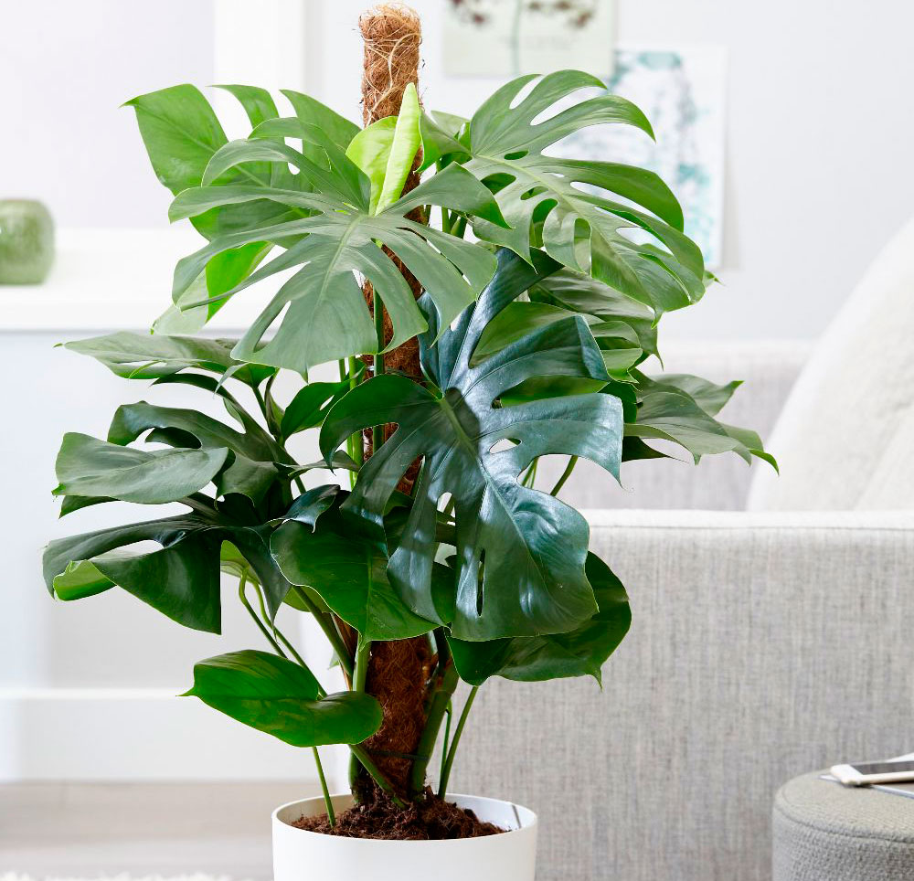
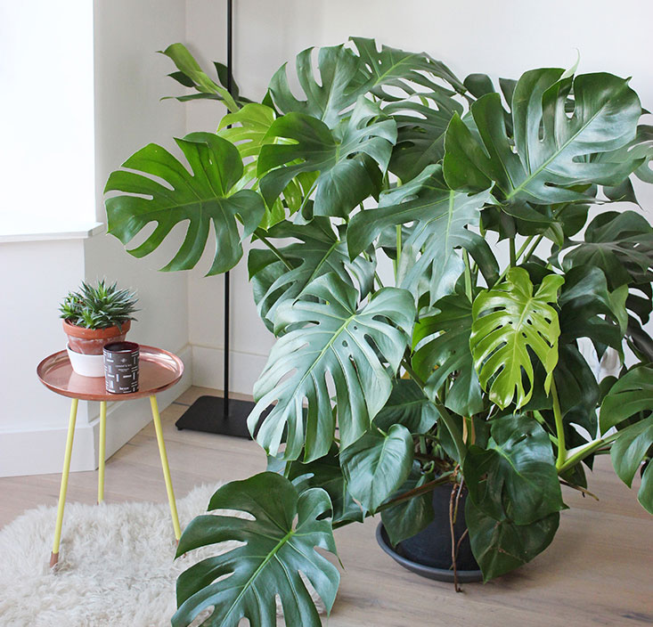

Растениевод
Комнатные растения, садовые цветы, огород
Растение монстера (Monstera) является представителем семейства Ароидные. Этот род
объединяет примерно 50 видов.В природе их можно повстречать на территории Центральной и
Южной Америки.
Содержание
[показать]
ну или вот так тоже можно со ссылкой сделать [показать]Особенности монстеры

Название рода монстера произошло от слова "monstrum", переводящееся как "чудовище", это
связано с большими размерами растения
и с его пугающим внешним видом. Представители
данного рода- вечнозелёные лианы и кустарники. Их толстые побеги являются лазящими,
зачастую присутствуют воздушные корни. Темно-зеленые длинночерешковые крупные листовые
пластины кожистые и на ощупь украшают прорези и отверстия различной
формы и величины.
Соцветие представляет собой толстый початок цилиндрической формы, у его основания
располагаются стерильные цветки,
а в верхней части -обоеполые.
Монстера относится к числу наиболее популярных растений, культивируемых в домашних
условиях. Научно доказано, что комнатная
монстера способна ионизировать воздух в помещении,
что является большим плюсом при выращивании такого цветка.
Краткое описание выращивания
- Цветение. Монстеру растят в качестве декоративно-лиственного растения. При
выращивании в домашних условиях цветет она крайне редко. - Освещенность. Нуждается в большом количестве яркого, но рассеянного света.
- Температурный режим. В осенне-весенний период-от 20 до 25 градусов, в зимнее время
- от 16 до 18 градусов. Следите за тем, чтоб температура в комнате не была ниже 10
градусов. - Полив. На протяжении вегетационного периода полив проводят сразу после того, как
просохнет верхний слой почвосмеси в горшке. С наступлением осени проводят постепенное
сокращение полива, а зимой почвосмесь увлажняют после того, как она просохнет на
1/4 глубины.